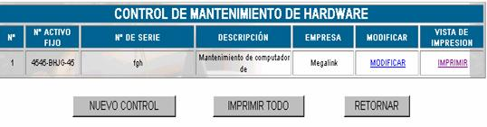
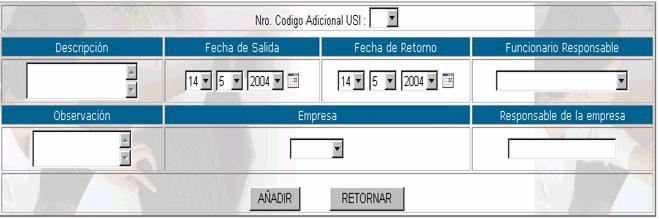

MANTENIMIENTO FUERA
Como en el anterior caso, cuando se requiere realizar el mantenimiento de un recurso fuera de la empresa, esta se debe registrar en esta opción.

N°,
especifica el número de control que se asigna automáticamente por el sistema.N° de activo fijo; especifica el número de activo fijo del código USI escogido.
N° de Serie; especifica el número de serie del recurso
Descripción; especifica la descripción que se hizo acerca del mantenimiento
Empresa; especifica el nombre de la empresa que realizará el mantenimiento.
Nuevo Control;

Nro Código adicional USI; usted puede escoger entre los códigos USI que asignó anteriormente en el momento del registro de la ficha técnica.
Descripción; realice una descripción detallada especificando porque se realiza el mantenimiento fuera de la empresa.
Fecha de salida; especifique en que día salió el recurso de la empresa.
Fecha de retorno; especifique también el día que tiene que volver el recurso a la empresa.
Funcionario responsable; anote el nombre de la persona que se hará cargo de cualquier situación que pueda ocurrir con el recurso.
Observación; anote las observaciones que usted considere pertinentes, especialmente si los días que el recurso está en mantenimiento son muchos.
Empresa; usted puede escoger la empresa solamente un nombre de algún proveedor registrado.
Responsable de la empresa; anote el nombre del responsable de la empresa que se hará cargo de la transacción
Presione AÑADIR una vez llenados estos datos
Cronograma; como lo establece el manual de procedimientos de la empresa se debe realizar el mantenimiento de los equipos de forma planificada, entonces para este propósito presione
REALIZARModificar; presione click en
MODIFICAR , para realizar las modificaciones del registro de mantenimiento externo que se hizo, aparecerá el formulario de introducción de datos, con los datos llenados en el momento del registro, cambie el dato que necesite y presione MODIFICAR DATOSImprimir; para obtener un reporte completo del mantenimiento externo presione
IMPRIMIR